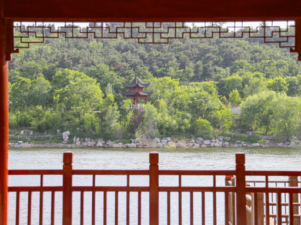

晨曦漫过烟台的浅山，带着渤海湾的温润气息，轻轻铺展在鲁东大学的每一寸土地上。校门庄重大气，“鲁东大学”四字笔力遒劲，在晨光中泛着温润的光泽，像是在无声地迎接每一位怀揣梦想的学子。沿着主干道前行，两侧的法桐枝繁叶茂，层层叠叠的叶片滤去了夏日的燥热，只留下细碎的光影在石板路上跳跃。风一吹，枝叶轻摇，沙沙作响，与学子们轻快的脚步声交织在一起，酿成校园里最动听的晨曲。路边的月季开得正好，粉的、红的、黄的，缀在绿茵间，添了几分灵动与生机，晨光落在花瓣上，凝着晶莹的露珠，美得恰到好处，让人忍不住放慢脚步，沉醉在这清晨的温柔里。
镜心湖是校园里最动人的一隅，一汪碧水澄澈如镜，将蓝天、白云、垂柳与岸边的亭台尽数收纳其中，分不清是天上景，还是水中画。石砌的小桥横跨湖面，扶栏远眺，岸边的垂柳垂着细长的枝条，风过处，柳丝轻拂水面，泛起一圈圈细碎的涟漪，惊扰了水中的云影与树影。夏日里，荷叶田田，粉白的荷花亭亭玉立，清风拂过，荷香漫溢，沁人心脾；秋日时，落叶轻旋着坠入湖面，像一叶叶小小的扁舟，随波轻漾。午后时分，常有学子坐在湖畔的石凳上，或捧书细读，或轻声交谈，身影与湖光山色相融，构成一幅静谧而温暖的画卷，藏着青春最纯粹的模样。
红顶楼静静矗立在校园中央，朱红的楼顶在蓝天绿树的映衬下，格外醒目，像是一颗沉淀了岁月的明珠，见证着鲁大的朝暮更替与四季轮回。楼宇的线条简洁而庄重，青砖墙面镌刻着时光的痕迹，每一扇窗后，都藏着学子们奋斗的身影，每一缕晨光中，都有知识的光芒在闪耀。楼前的草坪绿意盎然，几株松柏挺拔而立，四季常青，像是忠诚的守护者，默默陪伴着这座楼宇。阳光漫过红檐，给楼宇镀上一层暖金，树影与楼影交织，光影斑驳间，仿佛能听见岁月流淌的声音，也能感受到鲁大人代代相传的坚守与热爱，这里，藏着无数青春的憧憬与回忆。
图书馆是鲁大校园里最具书卷气的地方，通透明亮的玻璃窗，将阳光尽数邀入怀中，落在整齐排列的书架上，落在学子们专注的脸庞上。步入馆内，墨香与阳光的气息交织在一起，瞬间驱散了所有的浮躁，只剩下静谧与安心。书架上，书籍琳琅满目，从古今中外的文学名著到专业精深的学术典籍，每一本书都承载着思想的力量，等待着学子们去探寻。耳畔是沙沙的翻书声，是笔尖划过纸张的轻响，没有喧嚣，没有浮躁，只有一颗颗沉静的心灵，在文字的世界里遨游，在知识的海洋中沉淀。这里，是思想的港湾，是梦想的启航地，见证着每一份努力，也滋养着每一个年轻的梦想。
暮色渐浓，夕阳为鲁大的校园镀上一层温柔的橘色，白日的喧嚣渐渐褪去，只剩下静谧与温馨。乳子湖畔，树影婆娑，亭台隐约，晚风带着渤海湾的微润，轻轻拂过校园的每一寸土地，吹散了一日的疲惫。步道上，学子们三两相伴，或并肩漫步，或轻声畅谈，笑语轻扬，漫过草坪，漫过湖面，晕开满心的欢喜。路灯次第亮起，暖黄的灯光温柔地笼罩着校园，照亮了前行的脚步，也照亮了青春的脸庞。远处的楼宇与近处的草木，在灯火中晕染成一幅温柔的剪影，鲁大的夜，没有城市的喧嚣，只有静谧与美好，藏着青春最温柔的期许，也藏着岁月最安然的模样。
